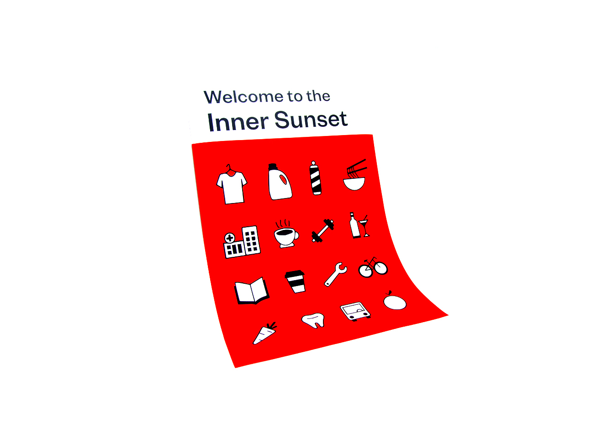
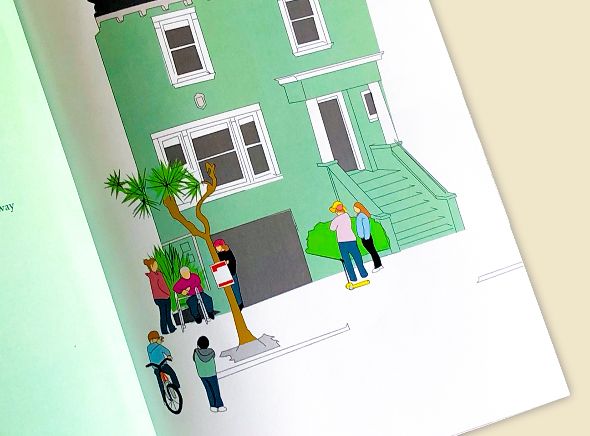

Twelfth Avenue
A few projects designed around San Francisco's Inner Sunset neighborhood.
Twelfth Avenue is a tiny book about San Francisco's Inner Sunset neighborhood by Golden Gate Park. While the area is a place which seems totally removed from the postcard picture of SF the community has grown into an extremely warm and calming pocket of the city.

Inner Sunset icon set.
I live here in this neighborhood and the book is my account with my neighbors, the local businesses, and activities of this little pocket of the city that hugs the southern side of Golden Gate Park. For such a small part of SF there is a close knit community here. Block parties are thrown for the kids, farmer's market's happen weekly, and restaurants are diverse ranging from eritrean food to japanese izakaya.The book includes interviews with residents and business owners, illustrations, an icon set, and infographics on the surrounding area. 